Online Exhibit → Dissidents
Political Prisoners at Perm
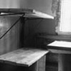
In the late 1960s and early 1970s, the Soviet government cracked down on the dissident movement. Several camps in the Perm region were transformed into the harshest camps for political prisoners. The prisoners were repeat offenders who had continued to criticize the Soviet government even after being released from prison. During the last years of the Soviet regime, the most prominent leaders and opposition activists from all over the Soviet Union were kept in these camps. Some of them perished there.

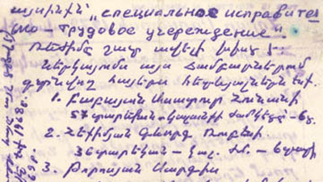
Armenian Political Prisoners
List of Armenian political prisoners in the camp (in Armenian).
Courtesy of the Gulag Museum at Perm-36.Perm-35

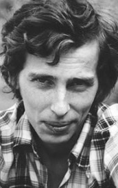
Ivan Kovalev
Russian human rights activist, was editor of the underground human rights bulletin V and the Chronicle of Current Events. For his “anti-Soviet activities,” the KGB arrested him in 1981 and sentenced him to five years in the Gulag and five years of internal exile.
Courtesy of Ivan Kovalev.At Perm-35, political prisoner Ivan Kovalev tried but could not fulfill his terribly demanding work quota. Camp authorities punished him even though the rules did not allow punishment if a prisoner was making his best effort. He then refused to work at all and was confined to the punishment cell continuously for 13 months on a severely reduced food ration. At the time, Soviet law dictated that prisoners could not be subjected to such conditions for more than 15 days. Because Kovalev was stubborn and because he had become an internationally recognized human rights activist, he eventually won his protest and no longer was forced to work.
Political prisoner Valerij Senderov also spent almost 13 months in the adjoining punishment cell to Ivan Kovalev for insisting on keeping his Bible. Camp authorities finally gave in to his demands as well.

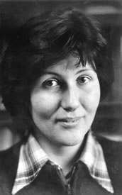
Tatiana Osipova
Tatiana Osipova, Ivan Kovalev’s wife, was arrested in 1980 for similar “crimes.” She was an active and vocal member of the human rights organization, Helsinki Group. When her term was over in 1985, the authorities charged her with breaking camp rules and kept her there for two more years.
Courtesy of Tatiana Osipova.
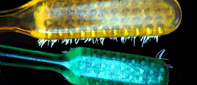
Ivan Kovalev etched a secret love message to his wife, Tatiana Osipova, on a toothbrush so that he could get it past the camp guards. She sent him a toothbrush with her message one year later, after he too had been arrested and sent to prison.
Courtesy of Tatiana Osipova and Ivan Kovalev.“To my one and only husband. Be strong, my darling. I love you and miss you. Tusha”
“Tusha. I am crazy about you. Hold on there baby. I am here for you.”

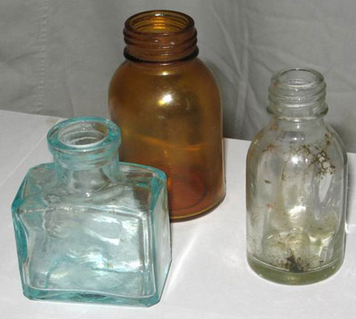
Glass Vials
Glass vials to hold secret messages.
Courtesy of the Gulag Museum at Perm-36.
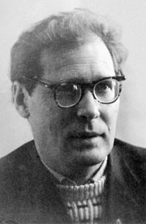

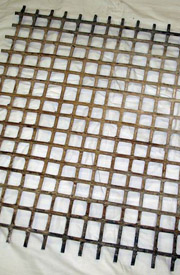
Sergei Kovalev
Ivan’s father, was one of the founders of the human rights movement in the Soviet Union and also a political prisoner at Perm-36.
Prison cell bar from the window of the Perm-36 solitary confinement cell in which human rights activist Kovalev and others were held for lengthy periods for violation of camp rules.
Courtesy of the Gulag Museum at Perm-36.Perm-36
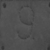
In the late 1970s and 1980s, Perm-36 housed the only maximum security facilities for political prisoners in the entire Soviet Union. Perm-36 held repeat offenders—those who had already served sentences for “anti-Soviet agitation and propaganda” and nonetheless sustained their political work after release. Repeat offenders usually served a term of ten years.

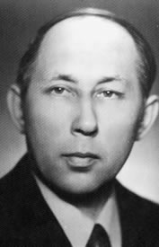
Balis Gayauskas
A former Perm-36 prisoner. One of the leaders of the struggle for Lithuanian freedom and independence, he spent two years in a Nazi concentration camp, thirty-five years in Soviet camps, and three years in exile. In 1978 Soviet authorities sentenced him to ten years in Perm-36 for two “crimes.” First, he translated Solzhenitsyn’s book The Gulag Archipelago into Lithuanian. Second, he maintained historical records of human rights activities and the Lithuanian independence movement. When Lithuania became independent, he became a member of Parliament and Minister of Security.
Courtesy of the Gulag Museum at Perm-36.
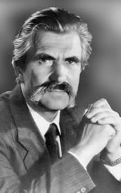
Levko Lukjanenko
A former Perm-36 prisoner. One of the leaders of the struggle for Ukrainian freedom and independence, he spent twenty-five years in Soviet camps and three years in exile. In 1956 Soviet authorities sentenced him to death for “creation of an anti-Soviet organization” but revised the sentence to fifteen years in the camps. His “crime” was establishing an organization calling for a referendum on Ukrainian self-determination, activity in fact sanctioned by the Soviet Constitution. In 1978 he received a ten-year sentence in Perm-36 for leading the activity of the Ukrainian Helsinki Group, a human rights organization. After his release he was the Ukraine Republic’s ambassador to Canada and a member of Parliament.
Courtesy of the Gulag Museum at Perm-36.
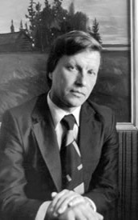
Leonid Borodin
Writer Leonid Borodin received two sentences in the political camps. After a camp term from 1967 to 1972, he received a ten-year sentence in Perm-36 in 1982. A winner of many prizes in literature, he is currently editor-in-chief of one of Russia’s leading journals.
Courtesy of the Gulag Museum at Perm-36.
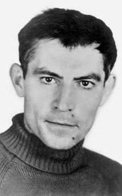

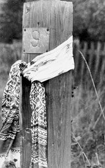
Vasyl Stus and His Grave
Poet Vasyl Stus twice received sentences for “anti-Soviet propaganda.” Nominated for a Nobel Prize in Literature in 1985, he died in Perm-36 on September 5 of that year.
This is the camp grave site of Vasyl Stus in 1988. Political prisoners who died in the camps were buried in the special camp cemeteries. Only the prisoner identification number on the tin plate nailed to the grave site’s post marks where his body lies. Friends and relatives of the poet tied the embroidered Ukranian towel to the post.
Courtesy of the Gulag Museum at Perm-36.
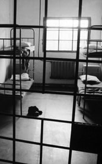
Perm-36 Barrack Cell
Perm-36 barrack cell where Russian writer Leonid Borodin and Ukrainian poet Vasyl Stus were kept.
Courtesy of the Gulag Museum at Perm-36.Online Exhibit | Reflections | Traveling Exhibit | Teacher Resources | About
© 2006–2021, Center for History and New Media, George Mason University.